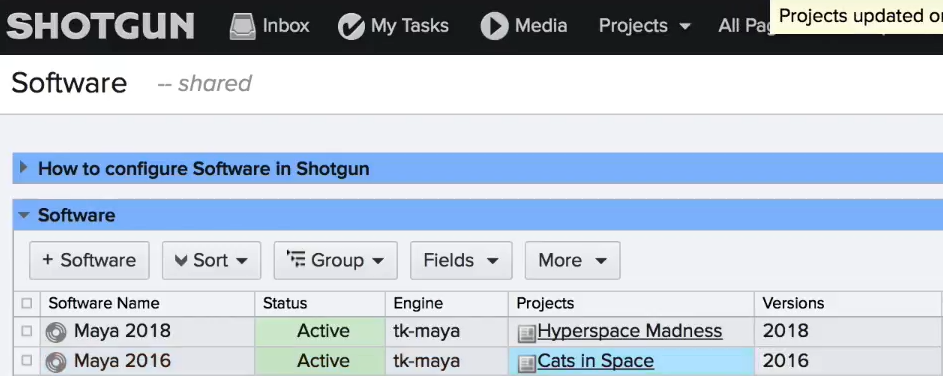

소트웨어 버전 관리
First let's talk a little about application and code versioning. 먼저 응용 프로그램과 코드 버전에 대해 잠시 살펴보겠습니다.
It's generally good practice for all artists working on a project to use the same version of keyd CCS like Maya nuke in Photoshop. 일반적으로 모든 아티스트가 프로젝트에서 같은 버젼의 포토샵, 마야, 뉴크를 사용하는 것이 좋습니다.
You wouldn't want one artist creating files in Maya 2018 that another artist can't open because they're using Maya 2016. Right? 한 아티스트가 Maya 2018에서 파일을 만들고 그것을 다른 아티스트가 Maya 2016에서는 열리지 않는 것을 원하지 않을 것입니다.
The responsible thing to do is install the same versions of Maya on all your artists computers and then configure shotgun to only use one agreed-upon version of Maya per project. 담당할 일은 모든 아티스트 컴퓨터에 동일한 버전의 Maya를 설치한 다음 프로젝트당 하나의 합의된 버전의 Maya만 사용하도록 샷건을 구성하는 것입니다.

In the example here I can visit the software entity page and configure one project to use Maya 2016 and another to use my 2018. 이 예에서는 소프트웨어 엔티티 페이지를 방문하여 Maya 2016을 사용하도록 한 프로젝트와 2018을 사용하도록 다른 프로젝트를 구성할 수 있습니다.
Now when my artists navigate to those projects in either shotgun desktop or the shotgun web app they won't have to guess which installed my aversion to use. 이제 아티스트들은 샷건 데스크탑이나 샷건 웹 앱에 있는 프로젝트로 이동할 때, 어떤 버전을 사용 할 것인가 걱정 하지 않아도 됩니다.
Incidentally if you can't determine the Virgen syntax to enter into a software entities version field use this trick. 반대로 소프트웨어 엔티티 버전 필드에 입력할 Virgen 구문을 확인할 수 없는 경우 이 방법을 사용합니다.
Open a DCC's sub menu grab the string for the version you're interested in and then subtract the main menu name. DCC의 하위 메뉴를 열고 관심 버전의 문자열을 누른 다음 기본 메뉴 이름을 뺍니다.
For example if I open the Photoshop CC menu I see Photoshop CC 2015 point 5. 예를 들어 Photoshop CC 메뉴를 열면 Photoshop CC 2015.5가 표시됩니다.
If I subtract the menu name which is Photoshop CC from the sub menu option name here I'm left with 2015 point 5. 여기 하위 메뉴 옵션 이름에서 Photoshop CC 메뉴 이름을 빼면 2015.5로 남습니다.
Which is what I drop in the software entities version field. 소프트웨어 엔티티 버전 필드에서 삭제되는 항목입니다.
There's a lot more information about how to manage software at your studio here. 여기 스튜디오에서 소프트웨어를 관리하는 방법에 대한 많은 정보가 있습니다. https://support.shotgunsoftware.com/hc/en-us/articles/115000067493#Cingiuring%20software%20launches
So now we have control over the versions of DCC's. That our artists use fantastic right. 그래서 이제 우리는 DCC의 버전을 통제할 수 있게 되었습니다. 우리 예술가들은 환상적인 권리를 가지고 있죠.
They'll be able to share files within a project without issue and if a new version of Maya new or Photoshop comes along we can safely install test distribute and queue it up for the next project. 프로젝트 내에서 아무 문제 없이 파일을 공유할 수 있으며, 새로운 버전의 Maya 또는 Photoshop이 나타나면 테스트 배포를 안전하게 설치하고 다음 프로젝트를 위해 대기열에 넣을 수 있습니다.
It's a good feeling to think about stuff this way. Right? 이런 식으로 생각하는 것은 좋은 기분이다. 그렇죠?
So shouldn't we continue to lock down our artists working environments so unexpected changes to software don't break production workflows at the worst times like right before a client delivery or right before your movie ships. 따라서 예상치 못한 소프트웨어 변경으로 인해 프로덕션 워크플로우가 중단되지 않도록 아티스트 작업 환경을 계속 차단해야 합니다.
The answer is actually a little complicated. 답은 사실 조금 복잡합니다.